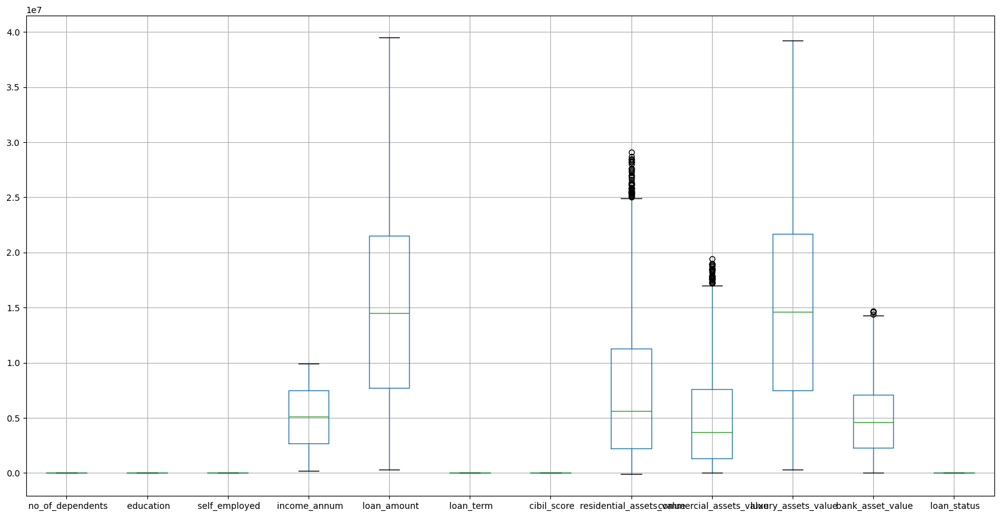
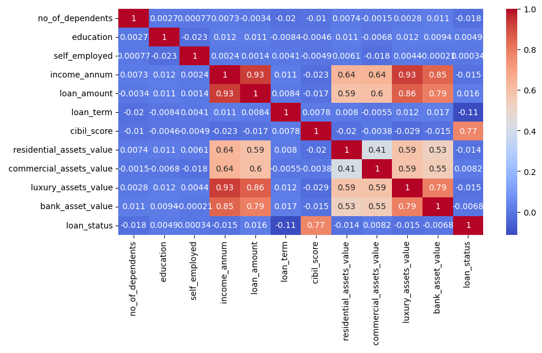
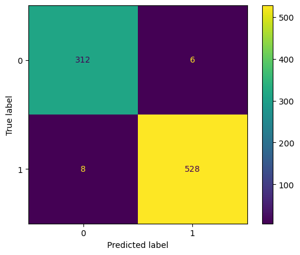

import pandas as pd # for data analysis, cleaning and exploration
import matplotlib.pyplot as plt # for data visualization
import seaborn as sns # for statiscal visualization
from sklearn.preprocessing import RobustScaler # for scaling the data
from imblearn.over_sampling import SMOTE # for balacing imbalanced classes
from sklearn.model_selection import train_test_split, GridSearchCV # for splitting the data and hyperparameter tuning
from sklearn.linear_model import LogisticRegression # for logistic regression model
from sklearn.metrics import accuracy_score # for model evaluation
from sklearn.metrics import confusion_matrix, ConfusionMatrixDisplay # for showing confusion matrix
from sklearn.metrics import classification_report # for showing precision, recall, f1-score
from sklearn.metrics import roc_curve, roc_auc_score # for roc curve and auc score
from xgboost import XGBClassifier # for XGBoost model
from sklearn.model_selection import KFold, cross_val_score # for cross validationLoan Approval Prediction (Classification)
Dataset Link: https://www.kaggle.com/datasets/architsharma01/loan-approval-prediction-dataset
Algorithms: Logistic Regression, XGBoost
Load Dataset
# Load the dataset
data = pd.read_csv('loan_approval_dataset.csv')
data| loan_id | no_of_dependents | education | self_employed | income_annum | loan_amount | loan_term | cibil_score | residential_assets_value | commercial_assets_value | luxury_assets_value | bank_asset_value | loan_status | |
|---|---|---|---|---|---|---|---|---|---|---|---|---|---|
| 0 | 1 | 2 | Graduate | No | 9600000 | 29900000 | 12 | 778 | 2400000 | 17600000 | 22700000 | 8000000 | Approved |
| 1 | 2 | 0 | Not Graduate | Yes | 4100000 | 12200000 | 8 | 417 | 2700000 | 2200000 | 8800000 | 3300000 | Rejected |
| 2 | 3 | 3 | Graduate | No | 9100000 | 29700000 | 20 | 506 | 7100000 | 4500000 | 33300000 | 12800000 | Rejected |
| 3 | 4 | 3 | Graduate | No | 8200000 | 30700000 | 8 | 467 | 18200000 | 3300000 | 23300000 | 7900000 | Rejected |
| 4 | 5 | 5 | Not Graduate | Yes | 9800000 | 24200000 | 20 | 382 | 12400000 | 8200000 | 29400000 | 5000000 | Rejected |
| ... | ... | ... | ... | ... | ... | ... | ... | ... | ... | ... | ... | ... | ... |
| 4264 | 4265 | 5 | Graduate | Yes | 1000000 | 2300000 | 12 | 317 | 2800000 | 500000 | 3300000 | 800000 | Rejected |
| 4265 | 4266 | 0 | Not Graduate | Yes | 3300000 | 11300000 | 20 | 559 | 4200000 | 2900000 | 11000000 | 1900000 | Approved |
| 4266 | 4267 | 2 | Not Graduate | No | 6500000 | 23900000 | 18 | 457 | 1200000 | 12400000 | 18100000 | 7300000 | Rejected |
| 4267 | 4268 | 1 | Not Graduate | No | 4100000 | 12800000 | 8 | 780 | 8200000 | 700000 | 14100000 | 5800000 | Approved |
| 4268 | 4269 | 1 | Graduate | No | 9200000 | 29700000 | 10 | 607 | 17800000 | 11800000 | 35700000 | 12000000 | Approved |
4269 rows × 13 columns
Data Description
no_of_dependents: Number of dependents of the applicant
education: Education of the applicant
self_employed: Employment status of the applicant
income_annum: Annual income of the applicant
loan_amount: Loan amount
loan_term: Loan term in years
cibil_score: Credit score
residential_assets_value: Value of residential assets
commercial_assets_value: Value of commercial assets
luxury_assets_value: Value of luxury assets
bank_asset_value: Value of bank assets
loan_status: Loan approval status
Data Preprocessing
# remove first column
data = data.drop(data.columns[0], axis=1)
data| no_of_dependents | education | self_employed | income_annum | loan_amount | loan_term | cibil_score | residential_assets_value | commercial_assets_value | luxury_assets_value | bank_asset_value | loan_status | |
|---|---|---|---|---|---|---|---|---|---|---|---|---|
| 0 | 2 | Graduate | No | 9600000 | 29900000 | 12 | 778 | 2400000 | 17600000 | 22700000 | 8000000 | Approved |
| 1 | 0 | Not Graduate | Yes | 4100000 | 12200000 | 8 | 417 | 2700000 | 2200000 | 8800000 | 3300000 | Rejected |
| 2 | 3 | Graduate | No | 9100000 | 29700000 | 20 | 506 | 7100000 | 4500000 | 33300000 | 12800000 | Rejected |
| 3 | 3 | Graduate | No | 8200000 | 30700000 | 8 | 467 | 18200000 | 3300000 | 23300000 | 7900000 | Rejected |
| 4 | 5 | Not Graduate | Yes | 9800000 | 24200000 | 20 | 382 | 12400000 | 8200000 | 29400000 | 5000000 | Rejected |
| ... | ... | ... | ... | ... | ... | ... | ... | ... | ... | ... | ... | ... |
| 4264 | 5 | Graduate | Yes | 1000000 | 2300000 | 12 | 317 | 2800000 | 500000 | 3300000 | 800000 | Rejected |
| 4265 | 0 | Not Graduate | Yes | 3300000 | 11300000 | 20 | 559 | 4200000 | 2900000 | 11000000 | 1900000 | Approved |
| 4266 | 2 | Not Graduate | No | 6500000 | 23900000 | 18 | 457 | 1200000 | 12400000 | 18100000 | 7300000 | Rejected |
| 4267 | 1 | Not Graduate | No | 4100000 | 12800000 | 8 | 780 | 8200000 | 700000 | 14100000 | 5800000 | Approved |
| 4268 | 1 | Graduate | No | 9200000 | 29700000 | 10 | 607 | 17800000 | 11800000 | 35700000 | 12000000 | Approved |
4269 rows × 12 columns
# check for missing values
data.isnull().sum()no_of_dependents 0
education 0
self_employed 0
income_annum 0
loan_amount 0
loan_term 0
cibil_score 0
residential_assets_value 0
commercial_assets_value 0
luxury_assets_value 0
bank_asset_value 0
loan_status 0
dtype: int64# info about the dataset
data.info()<class 'pandas.core.frame.DataFrame'>
RangeIndex: 4269 entries, 0 to 4268
Data columns (total 12 columns):
# Column Non-Null Count Dtype
--- ------ -------------- -----
0 no_of_dependents 4269 non-null int64
1 education 4269 non-null object
2 self_employed 4269 non-null object
3 income_annum 4269 non-null int64
4 loan_amount 4269 non-null int64
5 loan_term 4269 non-null int64
6 cibil_score 4269 non-null int64
7 residential_assets_value 4269 non-null int64
8 commercial_assets_value 4269 non-null int64
9 luxury_assets_value 4269 non-null int64
10 bank_asset_value 4269 non-null int64
11 loan_status 4269 non-null object
dtypes: int64(9), object(3)
memory usage: 400.3+ KB# names of columns
data.columnsIndex([' no_of_dependents', ' education', ' self_employed', ' income_annum',
' loan_amount', ' loan_term', ' cibil_score',
' residential_assets_value', ' commercial_assets_value',
' luxury_assets_value', ' bank_asset_value', ' loan_status'],
dtype='object')# check for duplicate rows
print("Number of duplicate rows: ", data.duplicated().sum())Number of duplicate rows: 0# convert object columns to category
data[' education'] = data[' education'].map({' Not Graduate': 0, ' Graduate': 1})
data[' self_employed'] = data[' self_employed'].map({' No': 0, ' Yes': 1})
data[' loan_status'] = data[' loan_status'].map({' Rejected': 0, ' Approved': 1})data.head()| no_of_dependents | education | self_employed | income_annum | loan_amount | loan_term | cibil_score | residential_assets_value | commercial_assets_value | luxury_assets_value | bank_asset_value | loan_status | |
|---|---|---|---|---|---|---|---|---|---|---|---|---|
| 0 | 2 | 1 | 0 | 9600000 | 29900000 | 12 | 778 | 2400000 | 17600000 | 22700000 | 8000000 | 1 |
| 1 | 0 | 0 | 1 | 4100000 | 12200000 | 8 | 417 | 2700000 | 2200000 | 8800000 | 3300000 | 0 |
| 2 | 3 | 1 | 0 | 9100000 | 29700000 | 20 | 506 | 7100000 | 4500000 | 33300000 | 12800000 | 0 |
| 3 | 3 | 1 | 0 | 8200000 | 30700000 | 8 | 467 | 18200000 | 3300000 | 23300000 | 7900000 | 0 |
| 4 | 5 | 0 | 1 | 9800000 | 24200000 | 20 | 382 | 12400000 | 8200000 | 29400000 | 5000000 | 0 |
Exploratory Data Analysis
# summary of the dataset
data.describe()| no_of_dependents | education | self_employed | income_annum | loan_amount | loan_term | cibil_score | residential_assets_value | commercial_assets_value | luxury_assets_value | bank_asset_value | loan_status | |
|---|---|---|---|---|---|---|---|---|---|---|---|---|
| count | 4269.000000 | 4269.000000 | 4269.000000 | 4.269000e+03 | 4.269000e+03 | 4269.000000 | 4269.000000 | 4.269000e+03 | 4.269000e+03 | 4.269000e+03 | 4.269000e+03 | 4269.000000 |
| mean | 2.498712 | 0.502225 | 0.503631 | 5.059124e+06 | 1.513345e+07 | 10.900445 | 599.936051 | 7.472617e+06 | 4.973155e+06 | 1.512631e+07 | 4.976692e+06 | 0.622160 |
| std | 1.695910 | 0.500054 | 0.500045 | 2.806840e+06 | 9.043363e+06 | 5.709187 | 172.430401 | 6.503637e+06 | 4.388966e+06 | 9.103754e+06 | 3.250185e+06 | 0.484904 |
| min | 0.000000 | 0.000000 | 0.000000 | 2.000000e+05 | 3.000000e+05 | 2.000000 | 300.000000 | -1.000000e+05 | 0.000000e+00 | 3.000000e+05 | 0.000000e+00 | 0.000000 |
| 25% | 1.000000 | 0.000000 | 0.000000 | 2.700000e+06 | 7.700000e+06 | 6.000000 | 453.000000 | 2.200000e+06 | 1.300000e+06 | 7.500000e+06 | 2.300000e+06 | 0.000000 |
| 50% | 3.000000 | 1.000000 | 1.000000 | 5.100000e+06 | 1.450000e+07 | 10.000000 | 600.000000 | 5.600000e+06 | 3.700000e+06 | 1.460000e+07 | 4.600000e+06 | 1.000000 |
| 75% | 4.000000 | 1.000000 | 1.000000 | 7.500000e+06 | 2.150000e+07 | 16.000000 | 748.000000 | 1.130000e+07 | 7.600000e+06 | 2.170000e+07 | 7.100000e+06 | 1.000000 |
| max | 5.000000 | 1.000000 | 1.000000 | 9.900000e+06 | 3.950000e+07 | 20.000000 | 900.000000 | 2.910000e+07 | 1.940000e+07 | 3.920000e+07 | 1.470000e+07 | 1.000000 |
# show relationship between annual income and loan amount
plt.figure(figsize=(10, 6))
sns.scatterplot(x=' income_annum', y=' loan_amount', data=data, hue=' loan_status', style=' loan_status', markers={0: 'X', 1: 'o'})
plt.legend(title='Loan Status')
plt.xlabel('Annual Income')
plt.ylabel('Loan Amount')
plt.title('Annual Income vs Loan Amount')
plt.show()
sns.relplot(x=' income_annum', y=' loan_amount', data=data, hue=' loan_status', col=' loan_status', kind='scatter')
plt.xlabel('Annual Income')
plt.ylabel('Loan Amount')
plt.show()
# check for outliers
plt.figure(figsize=(20, 10))
data.boxplot()
plt.show()
# check for correlation
plt.figure(figsize=(10, 5))
sns.heatmap(data.corr(), annot=True, cmap='coolwarm')
plt.show()
# standardize the data, using RobustScaler because of the outliers
scaler = RobustScaler()
# scale columns 3 to 10 only
data_scaled = data.copy()
data_scaled.iloc[:, 3:11] = scaler.fit_transform(data.iloc[:, 3:11])
# Ensure the DataFrame has the correct columns
data_scaled.columns = data.columns
data_scaled.head()C:\Users\mch\AppData\Local\Temp\ipykernel_8284\669986552.py:5: FutureWarning: Setting an item of incompatible dtype is deprecated and will raise in a future error of pandas. Value '[ 0.9375 -0.20833333 0.83333333 ... 0.29166667 -0.20833333
0.85416667]' has dtype incompatible with int64, please explicitly cast to a compatible dtype first.
data_scaled.iloc[:, 3:11] = scaler.fit_transform(data.iloc[:, 3:11])
C:\Users\mch\AppData\Local\Temp\ipykernel_8284\669986552.py:5: FutureWarning: Setting an item of incompatible dtype is deprecated and will raise in a future error of pandas. Value '[ 1.11594203 -0.16666667 1.10144928 ... 0.68115942 -0.12318841
1.10144928]' has dtype incompatible with int64, please explicitly cast to a compatible dtype first.
data_scaled.iloc[:, 3:11] = scaler.fit_transform(data.iloc[:, 3:11])
C:\Users\mch\AppData\Local\Temp\ipykernel_8284\669986552.py:5: FutureWarning: Setting an item of incompatible dtype is deprecated and will raise in a future error of pandas. Value '[ 0.2 -0.2 1. ... 0.8 -0.2 0. ]' has dtype incompatible with int64, please explicitly cast to a compatible dtype first.
data_scaled.iloc[:, 3:11] = scaler.fit_transform(data.iloc[:, 3:11])
C:\Users\mch\AppData\Local\Temp\ipykernel_8284\669986552.py:5: FutureWarning: Setting an item of incompatible dtype is deprecated and will raise in a future error of pandas. Value '[ 0.60338983 -0.62033898 -0.31864407 ... -0.48474576 0.61016949
0.02372881]' has dtype incompatible with int64, please explicitly cast to a compatible dtype first.
data_scaled.iloc[:, 3:11] = scaler.fit_transform(data.iloc[:, 3:11])
C:\Users\mch\AppData\Local\Temp\ipykernel_8284\669986552.py:5: FutureWarning: Setting an item of incompatible dtype is deprecated and will raise in a future error of pandas. Value '[-0.35164835 -0.31868132 0.16483516 ... -0.48351648 0.28571429
1.34065934]' has dtype incompatible with int64, please explicitly cast to a compatible dtype first.
data_scaled.iloc[:, 3:11] = scaler.fit_transform(data.iloc[:, 3:11])
C:\Users\mch\AppData\Local\Temp\ipykernel_8284\669986552.py:5: FutureWarning: Setting an item of incompatible dtype is deprecated and will raise in a future error of pandas. Value '[ 2.20634921 -0.23809524 0.12698413 ... 1.38095238 -0.47619048
1.28571429]' has dtype incompatible with int64, please explicitly cast to a compatible dtype first.
data_scaled.iloc[:, 3:11] = scaler.fit_transform(data.iloc[:, 3:11])
C:\Users\mch\AppData\Local\Temp\ipykernel_8284\669986552.py:5: FutureWarning: Setting an item of incompatible dtype is deprecated and will raise in a future error of pandas. Value '[ 0.57042254 -0.4084507 1.31690141 ... 0.24647887 -0.03521127
1.48591549]' has dtype incompatible with int64, please explicitly cast to a compatible dtype first.
data_scaled.iloc[:, 3:11] = scaler.fit_transform(data.iloc[:, 3:11])
C:\Users\mch\AppData\Local\Temp\ipykernel_8284\669986552.py:5: FutureWarning: Setting an item of incompatible dtype is deprecated and will raise in a future error of pandas. Value '[ 0.70833333 -0.27083333 1.70833333 ... 0.5625 0.25
1.54166667]' has dtype incompatible with int64, please explicitly cast to a compatible dtype first.
data_scaled.iloc[:, 3:11] = scaler.fit_transform(data.iloc[:, 3:11])| no_of_dependents | education | self_employed | income_annum | loan_amount | loan_term | cibil_score | residential_assets_value | commercial_assets_value | luxury_assets_value | bank_asset_value | loan_status | |
|---|---|---|---|---|---|---|---|---|---|---|---|---|
| 0 | 2 | 1 | 0 | 0.937500 | 1.115942 | 0.2 | 0.603390 | -0.351648 | 2.206349 | 0.570423 | 0.708333 | 1 |
| 1 | 0 | 0 | 1 | -0.208333 | -0.166667 | -0.2 | -0.620339 | -0.318681 | -0.238095 | -0.408451 | -0.270833 | 0 |
| 2 | 3 | 1 | 0 | 0.833333 | 1.101449 | 1.0 | -0.318644 | 0.164835 | 0.126984 | 1.316901 | 1.708333 | 0 |
| 3 | 3 | 1 | 0 | 0.645833 | 1.173913 | -0.2 | -0.450847 | 1.384615 | -0.063492 | 0.612676 | 0.687500 | 0 |
| 4 | 5 | 0 | 1 | 0.979167 | 0.702899 | 1.0 | -0.738983 | 0.747253 | 0.714286 | 1.042254 | 0.083333 | 0 |
Model Training
# split the data into features and target
X = data_scaled.drop(' loan_status', axis=1)
y = data_scaled[' loan_status']Logistic Regression
# split the data into training and testing sets
X_train, X_test, y_train, y_test = train_test_split(X, y, test_size=0.2, random_state=42)
X_train.shape, X_test.shape, y_train.shape, y_test.shape((3415, 11), (854, 11), (3415,), (854,))# use smote to balance the data
smote = SMOTE(random_state=42)
X_train, y_train = smote.fit_resample(X_train, y_train)
# check the shape of the data
X_train.shape, X_test.shape, y_train.shape, y_test.shape((4240, 11), (854, 11), (4240,), (854,))# see loan status distribution
y_train.value_counts() loan_status
1 2120
0 2120
Name: count, dtype: int64# train the model
model = LogisticRegression()
model.fit(X_train, y_train)
# make predictions
y_pred = model.predict(X_test)Logistic Regression Model Evaluation
# evaluate the model
accuracy = accuracy_score(y_test, y_pred)
accuracy0.9133489461358314# classification report
report_logistic = classification_report(y_test, y_pred)
print(report_logistic) precision recall f1-score support
0 0.86 0.92 0.89 318
1 0.95 0.91 0.93 536
accuracy 0.91 854
macro avg 0.90 0.91 0.91 854
weighted avg 0.92 0.91 0.91 854
# confusion matrix illustration
conf_matrix = confusion_matrix(y_test, y_pred)
ConfusionMatrixDisplay(conf_matrix, display_labels=model.classes_).plot()
plt.show()# plot roc curve
fpr, tpr, thresholds = roc_curve(y_test, y_pred)
roc_auc = roc_auc_score(y_test, y_pred)
plt.figure()
plt.plot(fpr, tpr, color='blue', lw=2, label=f'ROC curve (area = {roc_auc:.2f})')
plt.plot([0, 1], [0, 1], color='red', lw=2, linestyle='--')
plt.xlim([0.0, 1.0])
plt.ylim([0.0, 1.05])
plt.xlabel('False Positive Rate')
plt.ylabel('True Positive Rate')
plt.title('Logistic Regression (ROC) Curve')
plt.legend(loc='lower right')
plt.show()# use kfold cross validation
kfold = KFold(n_splits=5, shuffle=True, random_state=42)
scores = cross_val_score(model, X, y, cv=kfold)
print("Cross Validation Scores: ", scores)
print("Accuracy: ", scores.mean())Cross Validation Scores: [0.90866511 0.90632319 0.92037471 0.91569087 0.93200469]
Accuracy: 0.9166117107000776XGBoost
# use xgboost classifier
xgb_model = XGBClassifier()
xgb_model.fit(X_train, y_train)XGBClassifier(base_score=None, booster=None, callbacks=None,
colsample_bylevel=None, colsample_bynode=None,
colsample_bytree=None, device=None, early_stopping_rounds=None,
enable_categorical=False, eval_metric=None, feature_types=None,
gamma=None, grow_policy=None, importance_type=None,
interaction_constraints=None, learning_rate=None, max_bin=None,
max_cat_threshold=None, max_cat_to_onehot=None,
max_delta_step=None, max_depth=None, max_leaves=None,
min_child_weight=None, missing=nan, monotone_constraints=None,
multi_strategy=None, n_estimators=None, n_jobs=None,
num_parallel_tree=None, random_state=None, ...)In a Jupyter environment, please rerun this cell to show the HTML representation or trust the notebook. On GitHub, the HTML representation is unable to render, please try loading this page with nbviewer.org.
XGBClassifier(base_score=None, booster=None, callbacks=None,
colsample_bylevel=None, colsample_bynode=None,
colsample_bytree=None, device=None, early_stopping_rounds=None,
enable_categorical=False, eval_metric=None, feature_types=None,
gamma=None, grow_policy=None, importance_type=None,
interaction_constraints=None, learning_rate=None, max_bin=None,
max_cat_threshold=None, max_cat_to_onehot=None,
max_delta_step=None, max_depth=None, max_leaves=None,
min_child_weight=None, missing=nan, monotone_constraints=None,
multi_strategy=None, n_estimators=None, n_jobs=None,
num_parallel_tree=None, random_state=None, ...)# make predictions
y_pred_xgb = xgb_model.predict(X_test)# evaluate the model
accuracy_xgb = accuracy_score(y_test, y_pred_xgb)
accuracy_xgb0.9836065573770492# classification report
print(classification_report(y_test, y_pred_xgb)) precision recall f1-score support
0 0.97 0.98 0.98 318
1 0.99 0.99 0.99 536
accuracy 0.98 854
macro avg 0.98 0.98 0.98 854
weighted avg 0.98 0.98 0.98 854
# confusion matrix illustration
conf_matrix_xgb = confusion_matrix(y_test, y_pred_xgb)
ConfusionMatrixDisplay(conf_matrix_xgb, display_labels=xgb_model.classes_).plot()
plt.show()
# hyperparameter tuning for xgboost
param_grid = {
'n_estimators': [10, 25, 50, 100, 150, 200, 300],
'learning_rate': [0.005, 0.1, 0.01, 0.2],
'max_depth': [3, 5, 7],
}
grid_search = GridSearchCV(xgb_model, param_grid=param_grid, scoring='accuracy', cv=5, n_jobs=-1)
grid_search.fit(X_train, y_train)GridSearchCV(cv=5,
estimator=XGBClassifier(base_score=None, booster=None,
callbacks=None, colsample_bylevel=None,
colsample_bynode=None,
colsample_bytree=None, device=None,
early_stopping_rounds=None,
enable_categorical=False, eval_metric=None,
feature_types=None, gamma=None,
grow_policy=None, importance_type=None,
interaction_constraints=None,
learning_rate=None,...
max_cat_to_onehot=None,
max_delta_step=None, max_depth=None,
max_leaves=None, min_child_weight=None,
missing=nan, monotone_constraints=None,
multi_strategy=None, n_estimators=None,
n_jobs=None, num_parallel_tree=None,
random_state=None, ...),
n_jobs=-1,
param_grid={'learning_rate': [0.005, 0.1, 0.01, 0.2],
'max_depth': [3, 5, 7],
'n_estimators': [10, 25, 50, 100, 150, 200, 300]},
scoring='accuracy')In a Jupyter environment, please rerun this cell to show the HTML representation or trust the notebook. On GitHub, the HTML representation is unable to render, please try loading this page with nbviewer.org.
GridSearchCV(cv=5,
estimator=XGBClassifier(base_score=None, booster=None,
callbacks=None, colsample_bylevel=None,
colsample_bynode=None,
colsample_bytree=None, device=None,
early_stopping_rounds=None,
enable_categorical=False, eval_metric=None,
feature_types=None, gamma=None,
grow_policy=None, importance_type=None,
interaction_constraints=None,
learning_rate=None,...
max_cat_to_onehot=None,
max_delta_step=None, max_depth=None,
max_leaves=None, min_child_weight=None,
missing=nan, monotone_constraints=None,
multi_strategy=None, n_estimators=None,
n_jobs=None, num_parallel_tree=None,
random_state=None, ...),
n_jobs=-1,
param_grid={'learning_rate': [0.005, 0.1, 0.01, 0.2],
'max_depth': [3, 5, 7],
'n_estimators': [10, 25, 50, 100, 150, 200, 300]},
scoring='accuracy')XGBClassifier(base_score=None, booster=None, callbacks=None,
colsample_bylevel=None, colsample_bynode=None,
colsample_bytree=None, device=None, early_stopping_rounds=None,
enable_categorical=False, eval_metric=None, feature_types=None,
gamma=None, grow_policy=None, importance_type=None,
interaction_constraints=None, learning_rate=None, max_bin=None,
max_cat_threshold=None, max_cat_to_onehot=None,
max_delta_step=None, max_depth=None, max_leaves=None,
min_child_weight=None, missing=nan, monotone_constraints=None,
multi_strategy=None, n_estimators=None, n_jobs=None,
num_parallel_tree=None, random_state=None, ...)XGBClassifier(base_score=None, booster=None, callbacks=None,
colsample_bylevel=None, colsample_bynode=None,
colsample_bytree=None, device=None, early_stopping_rounds=None,
enable_categorical=False, eval_metric=None, feature_types=None,
gamma=None, grow_policy=None, importance_type=None,
interaction_constraints=None, learning_rate=None, max_bin=None,
max_cat_threshold=None, max_cat_to_onehot=None,
max_delta_step=None, max_depth=None, max_leaves=None,
min_child_weight=None, missing=nan, monotone_constraints=None,
multi_strategy=None, n_estimators=None, n_jobs=None,
num_parallel_tree=None, random_state=None, ...)# best parameters
grid_search.best_params_{'learning_rate': 0.2, 'max_depth': 3, 'n_estimators': 150}better_model = XGBClassifier(**grid_search.best_params_)
better_model.fit(X_train, y_train)XGBClassifier(base_score=None, booster=None, callbacks=None,
colsample_bylevel=None, colsample_bynode=None,
colsample_bytree=None, device=None, early_stopping_rounds=None,
enable_categorical=False, eval_metric=None, feature_types=None,
gamma=None, grow_policy=None, importance_type=None,
interaction_constraints=None, learning_rate=0.2, max_bin=None,
max_cat_threshold=None, max_cat_to_onehot=None,
max_delta_step=None, max_depth=3, max_leaves=None,
min_child_weight=None, missing=nan, monotone_constraints=None,
multi_strategy=None, n_estimators=150, n_jobs=None,
num_parallel_tree=None, random_state=None, ...)In a Jupyter environment, please rerun this cell to show the HTML representation or trust the notebook. On GitHub, the HTML representation is unable to render, please try loading this page with nbviewer.org.
XGBClassifier(base_score=None, booster=None, callbacks=None,
colsample_bylevel=None, colsample_bynode=None,
colsample_bytree=None, device=None, early_stopping_rounds=None,
enable_categorical=False, eval_metric=None, feature_types=None,
gamma=None, grow_policy=None, importance_type=None,
interaction_constraints=None, learning_rate=0.2, max_bin=None,
max_cat_threshold=None, max_cat_to_onehot=None,
max_delta_step=None, max_depth=3, max_leaves=None,
min_child_weight=None, missing=nan, monotone_constraints=None,
multi_strategy=None, n_estimators=150, n_jobs=None,
num_parallel_tree=None, random_state=None, ...)# make predictions
y_pred_xgb = better_model.predict(X_test)XGBoost Model Evaluation
# evaluate the model
accuracy_xgb = accuracy_score(y_test, y_pred_xgb)
accuracy_xgb0.977751756440281# classification report
report_xgb = classification_report(y_test, y_pred_xgb)
print(report_xgb) precision recall f1-score support
0 0.97 0.97 0.97 318
1 0.98 0.99 0.98 536
accuracy 0.98 854
macro avg 0.98 0.98 0.98 854
weighted avg 0.98 0.98 0.98 854
# confusion matrix illustration
conf_matrix_xgb = confusion_matrix(y_test, y_pred_xgb)
ConfusionMatrixDisplay(conf_matrix_xgb, display_labels=better_model.classes_).plot(cmap='Blues')
plt.show()# show roc curve
fpr_xgb, tpr_xgb, thresholds = roc_curve(y_test, y_pred_xgb)
roc_auc_xgb = roc_auc_score(y_test, y_pred_xgb)
plt.figure()
plt.plot(fpr_xgb, tpr_xgb, color='blue', lw=2, label=f'ROC curve (area = {roc_auc_xgb:.2f})')
plt.plot([0, 1], [0, 1], color='red', lw=2, linestyle='--')
plt.xlim([0.0, 1.0])
plt.ylim([0.0, 1.05])
plt.xlabel('False Positive Rate')
plt.ylabel('True Positive Rate')
plt.title('XGBoost (ROC) Curve')
plt.legend(loc='lower right')
plt.show()# cross validation
scores_xgb = cross_val_score(better_model, X, y, cv=kfold)
print("Cross Validation Scores: ", scores_xgb)
print("Accuracy: ", scores_xgb.mean())Cross Validation Scores: [0.97775176 0.97892272 0.98126464 0.98711944 0.98475967]
Accuracy: 0.9819636439512287Model Evaluation
Comparison between Logistic Regression and XGBoost
# comparison of models
models = ['Logistic Regression', 'XGBoost']
accuracies = [accuracy, accuracy_xgb]
classification_reports = [report_logistic, report_xgb]
confusion_matrices = [conf_matrix, conf_matrix_xgb]
cross_val_scores = [scores.mean(), scores_xgb.mean()]
for i in range(2):
print(f'{models[i]} Model Accuracy: {accuracies[i]}')
print(f'{models[i]} Model Cross Validation Accuracy: {cross_val_scores[i]}')
print(f'{models[i]} Model Classification Report: \n{classification_reports[i]}\n')
# show confusion matrix side by side
fig, ax = plt.subplots(2, 2, figsize=(15, 10))
ConfusionMatrixDisplay(conf_matrix, display_labels=model.classes_).plot(ax=ax[0, 0], cmap='Blues')
ax[0, 0].set_title('Logistic Regression Model Confusion Matrix')
ConfusionMatrixDisplay(conf_matrix_xgb, display_labels=better_model.classes_).plot(ax=ax[0, 1], cmap='Blues')
ax[0, 1].set_title('XGBoost Model Confusion Matrix')
# plot roc curves
ax[1, 0].plot(fpr, tpr, color='blue', lw=2, label=f'ROC curve (area = {roc_auc:.2f})')
ax[1, 0].plot([0, 1], [0, 1], color='red', lw=2, linestyle='--')
ax[1, 0].set_xlim([0.0, 1.0])
ax[1, 0].set_ylim([0.0, 1.05])
ax[1, 0].set_xlabel('False Positive Rate')
ax[1, 0].set_ylabel('True Positive Rate')
ax[1, 0].set_title('Logistic Regression ROC Curve')
ax[1, 0].legend(loc='lower right')
ax[1, 1].plot(fpr_xgb, tpr_xgb, color='blue', lw=2, label=f'ROC curve (area = {roc_auc_xgb:.2f})')
ax[1, 1].plot([0, 1], [0, 1], color='red', lw=2, linestyle='--')
ax[1, 1].set_xlim([0.0, 1.0])
ax[1, 1].set_ylim([0.0, 1.05])
ax[1, 1].set_xlabel('False Positive Rate')
ax[1, 1].set_ylabel('True Positive Rate')
ax[1, 1].set_title('XGBoost ROC Curve')
ax[1, 1].legend(loc='lower right')
plt.tight_layout()
plt.show()Logistic Regression Model Accuracy: 0.9133489461358314
Logistic Regression Model Cross Validation Accuracy: 0.9166117107000776
Logistic Regression Model Classification Report:
precision recall f1-score support
0 0.86 0.92 0.89 318
1 0.95 0.91 0.93 536
accuracy 0.91 854
macro avg 0.90 0.91 0.91 854
weighted avg 0.92 0.91 0.91 854
XGBoost Model Accuracy: 0.977751756440281
XGBoost Model Cross Validation Accuracy: 0.9819636439512287
XGBoost Model Classification Report:
precision recall f1-score support
0 0.97 0.97 0.97 318
1 0.98 0.99 0.98 536
accuracy 0.98 854
macro avg 0.98 0.98 0.98 854
weighted avg 0.98 0.98 0.98 854